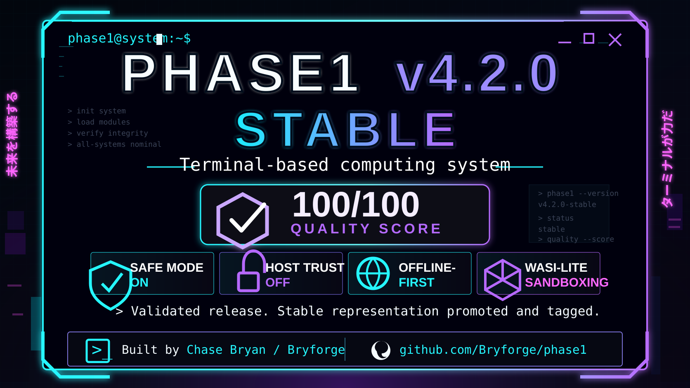

official link hub
Phase1 · Bryforge · Chase Bryan
Use this page as the public advertising and discovery hub for Phase1, the Bryforge company profile, Chase Bryan updates, documentation, source code, sponsorship, company contact, and launch announcements.
Phase1 Website
bryforge.github.io/phase1
Wiki Hub
Manuals, tutorials, command map, safety notes
GitHub Repository
Source code, releases, issues, roadmap
Bryforge GitHub
Company code profile and public repositories
Bryforge / Phase1 on X
@bryforgephase1
Chase Bryan on X
@ckbryan91
Company Email
bryforge@gmail.com
Support Bryforge
Buy Me a Coffee sponsorship path
Publicity Guide
Advertising channels, copy, keywords, posting cadence
Recommended public link to share: https://bryforge.github.io/phase1/links.html